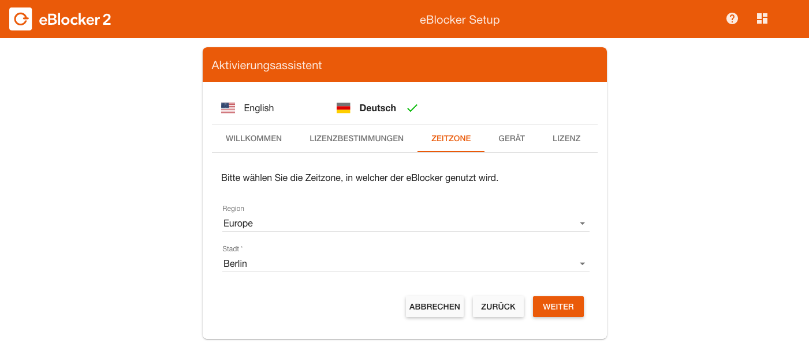

Deutsch | English
Wenn Sie die eBlocker Verpackung vor sich stehen haben, öffnen Sie bitte erst das Siegel der Verpackung mit einem scharfen Gegenstand. Öffnen Sie nun die Verpackung und nehmen Sie den Lieferumfang aus dem Karton heraus.
Sie sollten folgenden Lieferumfang ausgepackt haben:
Verbinden Sie das orange LAN Kabel zunächst mit Ihrem Router und anschließend mit dem eBlocker. Wenn Sie ein „Klick“ während des Anschließens hören, ist das Kabel ordnungsgemäß zwischen Router und eBlocker verbunden.
Tipp:
Wenn Sie den eBlocker mit Ihrem Router verbinden, dann meiden Sie den LAN Port Nummer 4 an Ihrem Router. Der LAN Port Nummer 4 könnte bei Ihrem Router gegebenenfalls als LAN-Gastzugang eingerichtet sein. Der eBlocker kann in dem Fall nicht an diesem LAN Port für Ihr Netzwerk aktiviert werden. Entfernen Sie ausserdem zunächst alle WLAN Repeater aus dem Netzwerk, im Idealfall sollte jedes Ihrer Endgeräte zunächst mindestens einmal ohne Repeater und ohne Powerlines über den eBlocker in das Internet gelangen.
Packen Sie nun das Netzteil aus und suchen Sie den passenden Aufsatz für Ihr Land heraus. Schieben Sie den Aufsatz auf das Netzteil, bis Sie ein „Klick“ hören.

Nun verbinden Sie das Netzteil mit dem eBlocker und nach wenigen Sekunden beginnen die beiden LEDs am LAN Port des eBlockers zu leuchten, oder zu blinken. Der eBlocker startet nun sein Betriebssystem und benötigt dazu ca. 5 Minuten.

Zur reibungslosen Einrichtung des eBlockers empfehlen wir einen Computer zu verwenden, der direkt per LAN-Kabel mit Ihrem Netzwerk verbunden ist. Nach ca. 5 Minuten starten Sie Ihren Internet Browser und rufen die Webseite eblocker.box auf. Sie sehen nun das sogenannte eBlocker Dashboard. Sie sehen auf dem Dashboard eine Karte mit dem Namen "Settings". Klicken Sie hier auf "Activate", um Ihren eBlocker zu aktivieren. Alternativ können Sie auf der Karte auch den Link "Go to settings" anklicken.

Sie können alternativ auch im Browser setup.eblocker.com aufrufen. Sie sehen dann die Welcome Seite. Klicken Sie hier auf "Activate license", um Ihren eBlocker zu aktivieren. Alternativ können Sie hier auch auf den Link "Settings" anklicken.
Der Aktivierungsassistent wird Sie nun durch die Aktivierung begleiten. Stellen Sie nun die Sprache auf Deutsch um und klicken auf "Weiter".
 Akzeptieren Sie die Lizenzbestimmungen und klicken auf "Weiter".
Akzeptieren Sie die Lizenzbestimmungen und klicken auf "Weiter".

Wählen Sie nun Ihre Zeitzone aus, in welcher Sie leben und klicken auf "Weiter".
Nun werden Sie nach der eBlocker Seriennummer fragen, welche Sie auf dem Boden des eBlockers finden. Vergeben Sie dann dem eBlocker einen Namen und klicken auf "Weiter".
 Geben Sie anschließend den Lizenzschlüssel und Ihre Mailadresse an, mit der Sie die eBlocker Lizenz aktivieren möchten und klicken auf "Weiter".
Geben Sie anschließend den Lizenzschlüssel und Ihre Mailadresse an, mit der Sie die eBlocker Lizenz aktivieren möchten und klicken auf "Weiter".

Der eBlocker bestätigt die erfolgreiche Aktivierung und wird im Anschluss automatisch nach einem Update suchen. Sollte ein Update auf eine neue eBlockerOS Version vorliegen wird dieses Heruntergeladen und automatisch eingespielt. Ein Update kann bis zu 10 Minuten dauern. Bitte warten Sie bis der eBlocker das Update eingespielt hat.
Ältere eBlocker Versionen, fragen nach der erfolgreichen Aktivierung nicht automatisch nach einem Update. Gehen Sie in die eBlocker Einstellungen > Menü Allgemein > Reiter Aktualisierung und führen Sie ein manuelles Update aus. Falls Sie keinen Update Button sehen, sind automatische Updates schon aktiviert. Klicken Sie auf den Regler, um die automatischen Updates zu deaktivieren.
Herzlichen Glückwunsch, Sie haben Ihren eBlocker nun angeschlossen und aktiviert. Starten Sie nun einmal alle aktiven Geräte in Ihrem Netzwerk neu, oder trennen bei den aktiven Geräten für ein paar Sekunden die LAN oder WLAN Verbindung.
Gut zu wissen:
Nach der Aktivierung sind Ihre Geräte durch die Domain Blocker des eBlockers geschützt. Der eBlocker verhindert nun automatisch, dass Daten sammelnde Cookies oder andere Elemente, durch die Sie identifizierbar sind, auf Ihren Browser gelangen. Ohne den eBlocker hat Ihr Browser jedoch wahrscheinlich bereits zahlreiche Tracking-Cookies der unterschiedlichsten Anbieter gesammelt. Wir empfehlen daher, zuerst alle Cookies zu löschen, damit diese Tracker „Ihre Spur verlieren“.